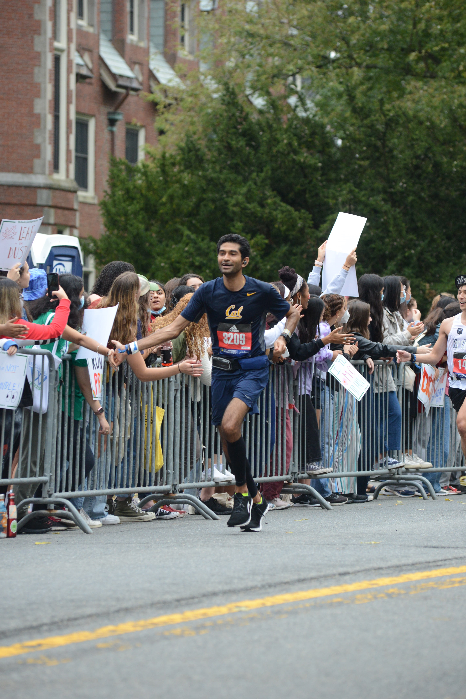
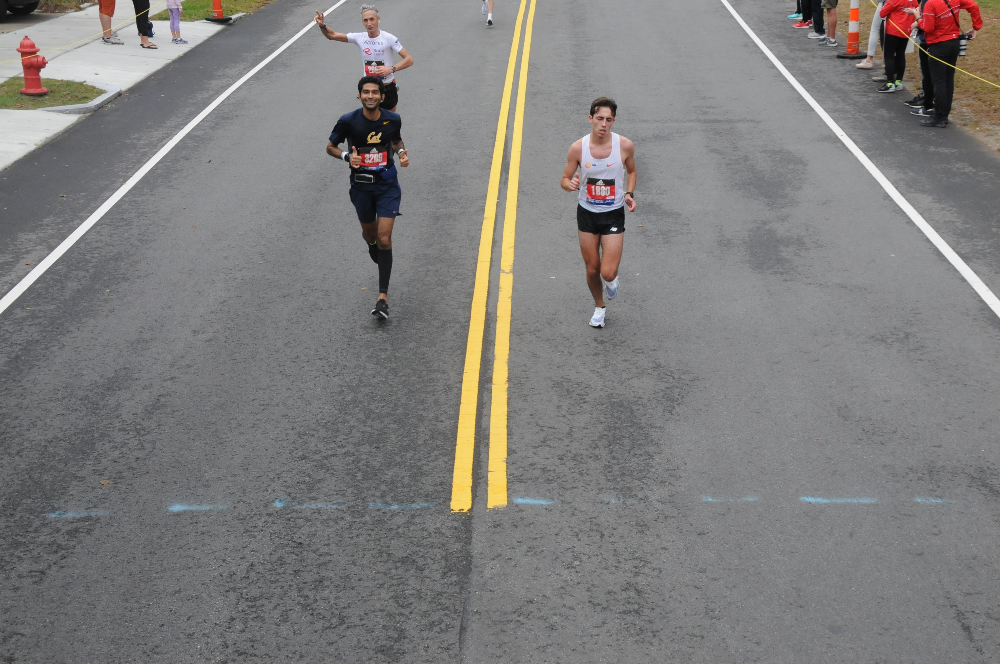
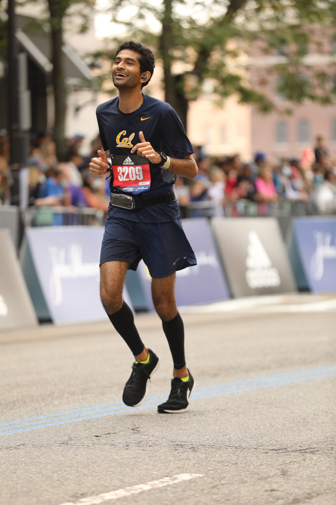

Applied ML researcher. 2× founder, exec, and researcher
across multimodal domains and agentic orchestration.
Author of Shipping Machine Learning Systems.
Stanford & Berkeley.
Work
2025 — PresentOverline IQ · CTO & Co-founder
Architected and built an agentic AI platform end-to-end — training
pipelines, ingestion, orchestration, and the application layer. Shipped
Overline Agent to production in six months, delivering continuous
tax, property, and insurance analysis for real estate investors.
Designed a multimodal model strategy spanning open-source
(GLM-4.6V, DeepSeek OCR, Gemma 3) and frontier models (Gemini 3, Opus 4.5),
with post-training pipelines for orchestrators and RAG-based document
analysis grounded in property DNA. Built infrastructure that securely
ingests and analyzes a $1B+ portfolio across 10,000+ properties.
2023 — 2024SambaNova Systems
· Senior Director of Machine Learning
Built applied LLM and LVM work on novel AI hardware. Designed pipelines
to parse documents, generate synthetic data, and pretrain / finetune
TableQA and ChartQA models. Co-authored Composition of Experts, a
modular compound AI system for routing across LLMs on enterprise tasks
(MLSys). Established the team that delivered 2.4k TPS for Llama 3.2
multimodal on proprietary hardware, and ran ML training experiments
across medical and document intelligence applications.
2020 — PresentLotus AI · Co-founder & Chief Engineer
Engineering for early-stage ML startups. At WavvAI, built a
copyright-free synthetic MIDI data pipeline grounded in musical first
principles, then pretrained an autoregressive model — Musica —
that generates production-ready EDM, validated with Grammy-winning
musicians. At AnyCart, built the grocery recommendation system.
At predictABill, built a scraper that parses and summarizes
disparate health insurance policies.
2022 — 2023PathAI
· Associate Director of Machine Learning
Generalized pathology computer-vision models to new labs and scanners
across five AI products, generating ~$5M in new revenue and cutting ML
development time by 25% — four ArXiv preprints in three quarters
(SC-MIL, S-DOTA, ContriMix, self-training for liver histopathology).
Developed Multiple Instance Learning and graph neural network models
to predict molecular biomarkers (RAS+RAF, ROS1, cMET, MSI) for lung
and colorectal cancer. Built foundation tissue segmentation and cell
classification models on par with disease-specific models, cutting
deployment from weeks to days.
2019 — 2022One Concern
· Director of Machine Learning Solutions
Initiated the COVID-19 stochastic contact-network modeling effort that
became the COVID Calculator — a design-award-winning tool that
enterprises used to inform return-to-office policy (PLOS One; patent).
Streamlined data, model, and code versioning to cut model delivery
time in half. Led the technical work behind the $100M SOMPO
investment for disaster resilience in Japan.
2015 — 2019Datmo · CEO & Co-founder · acq. One Concern
Developed a novel CNN + NER + ASR combined algorithm for real-time
multimedia retrieval — 1.5× accuracy and 10× latency reduction.
Built an AWS-based MLOps platform and
open-source experiment / environment tracker
for CV, NLP, and traditional ML, deployed at scale to 1M+ end users.
I host and write The Good AI Podcast, where I talk with founders
and investors building profitable companies with a purpose — guests
have included Andy Beck (PathAI), Noosheen Hashemi (January AI), and
Ahmad Wani (One Concern).
Eight marathons in the legs so far — including Boston in 2020 and 2021,
which still rank as my best long-run memories. I keep the streak alive on
Strava.



When I'm not running or building, I'm at the piano remixing pop covers as
Piano Mixtape.
Contact
For collaboration, advisory work, or just to say hi — drop a note and
it'll land in my inbox.